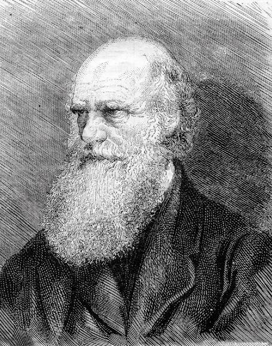

Reflexiono para avanzar
Alumno:
Reflexiono para avanzar
Alumno:
1. Argumenta. ¿Existen oraciones que tienen más de un verbo conjugado?
2. Lee otro fragmento de la crónica acerca del viaje de Charles Darwin:
(Fragmento adaptado)

El viaje de Charles Darwin y su teoría sobre el origen de las especies son tal vez los temas más famosos y controversiales del siglo XIX. De este viaje se han escrito muchas versiones o bien han sido llevadas con éxito al cine. La expedición zarpó de Plymouth el 27 de diciembre de 1831 y fondeó en Río de Janeiro el 4 de abril de 1832. El 22 de agosto de 1832, comenzó los trabajos hidrográficos desde el Río de la Plata hacia el sur. En diciembre, recaló en Tierra del Fuego; el 23 de enero de 1833, desembarcó a tres fueguinos en Wulaia. El 9 de junio, el Beagle zarpó de Puerto del Hambre hacia Chiloé. Fondeó en San Carlos de Ancud el 27 de junio de 1834. Fitz Roy permaneció en Chile hasta fines de julio de 1835, luego de cartografiar varias veces su costa. Participó activamente en el rescate de la tripulación del buque Challenger, que varó el 19 de mayo de 1835 en Punta Morguilla, cerca de la desembocadura del río Lebu. El 9 de agosto, arribó a El Callao donde permaneció hasta el 7 de septiembre, es decir, la fecha en que zarpó rumbo a las islas Galápagos.
Permaneció en las Galápagos desde 15 de septiembre al 20 de octubre, pero luego zarpó rumbo a Tahití. Del 15 al 19 de noviembre, permaneció en Tahití; del 21 al 30 de diciembre, en Nueva Zelanda.
Del 11 de enero al 13 de marzo de 1836, en Australia; del 31 de marzo al 12 de abril, en las islas Keeling, investigando los bancos de coral. El 29 de abril arribó a Port Louis en islas Mauricio; el 9 de mayo llegó a la bahía Simón, en el cabo de Buena Esperanza, luego continuó a la isla Santa Elena, a Ascensión, Salvador de Bahía, Pernambuco, Cabo Verde y las Azores. Su viaje terminó en Falmouth el 2 de octubre de 1836, después de una travesía de cuatro años y nueve meses.